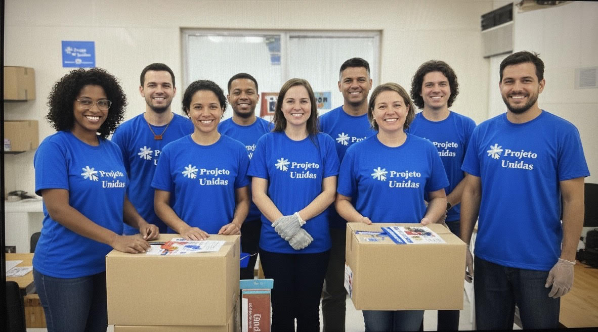

Nossa Equipe de vonluntários

Quem somos
Nasceu da vontade de unir pessoas em torno da solidariedade. Desde então centenas de vonluntários se juntaram á causa, levando alimentos, roupas e esperança para quem mais precisa.